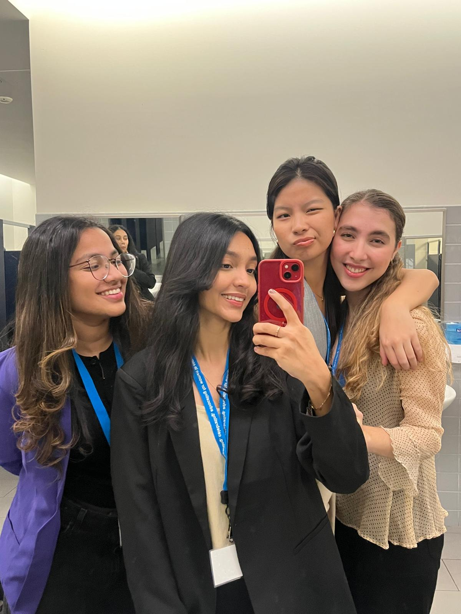
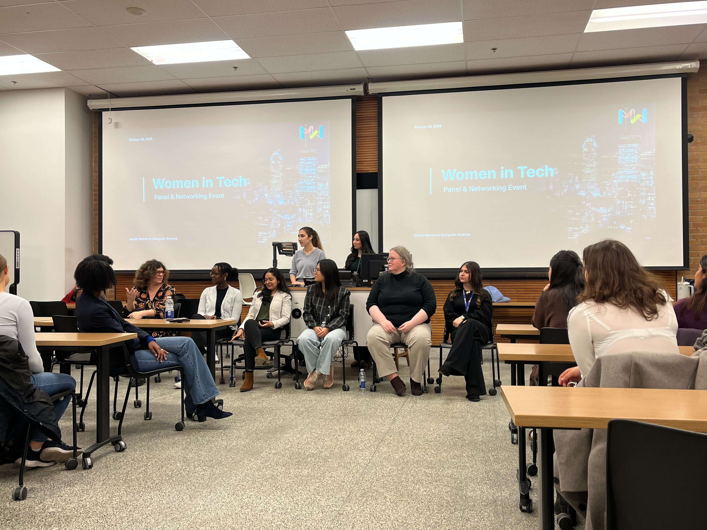
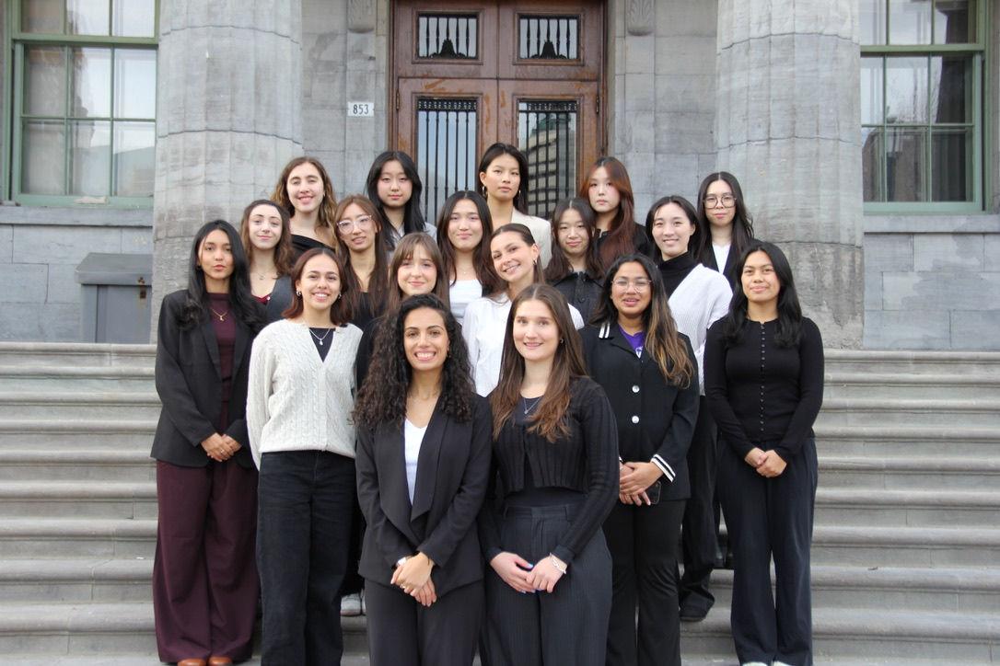
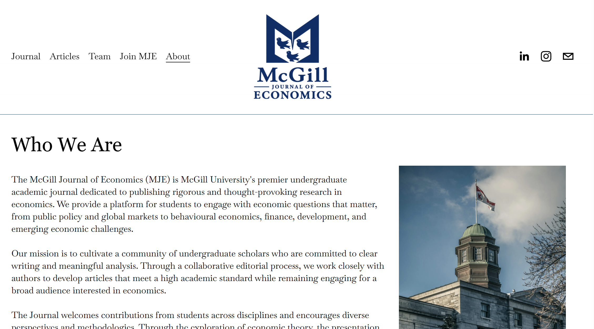

Outside of class, I spend a lot of my time getting involved in the McGill
community through event planning, writing, volunteering, and technical work. I really enjoy bringing people
together, taking responsibility for projects, and contributing to organizations that have made my university
experience more meaningful.
Present
McGill Women in Computer Science (McWiCS)
VP Events · Previously Events Director
March 2025 – Present
7-Member Events Team20+ External Partners117 Attendees – Largest Event
As VP Events at McGill Women in Computer Science, I lead a seven-member
events team organizing office tours, networking nights, panels, and
skill-building events throughout the academic year. I also help maintain
relationships with more than 20 company, faculty, and student-organization
partners. Previously, as Events Director, I led four events, including a Women in
Tech panel, a company office tour, and a CAN-CWIC pre-conference
get-together for McGill attendees.
I joined McWiCS toward the end of my first year, and it has become one
of the most meaningful parts of my time at McGill. I’ve loved helping
other students meet people, explore different paths in computer science,
and feel more connected to the community.



Martlet Fund McGill
Senior Analyst · Quantitative Trading Team
September 2026 – Present
Mentor 2 Junior AnalystsTrading Strategy Research
As a Senior Analyst on Martlet Fund McGill’s quantitative trading
team, I mentor two junior analysts as we research trading strategies
and turn ideas from papers into testable approaches. The work brings
together my interests in programming and economics, with a focus on
understanding why a strategy might work and how we could evaluate it.
I originally became involved with the McGill Journal of Economics through an interest in its editorial
work, but found a different way to contribute through technology. As VP Technology, I manage the
journal’s website and have added site-wide search and dedicated
author pages to make its content easier to navigate. In summer 2026, redesigned the site, updating its
layout, pages, and theme.
I upload more than 25 articles each month, support the journal’s
larger releases, and contribute to executive-team discussions about
recruitment, website features, and design. During my first year
managing the website, annual visits rose from 4,054 to 13,605,
a 236% increase over the previous year.

McGill Office for Science and Society (OSS)
Student Contributor
March 2026 – Present
2 Published ArticlesScience CommunicationResearch & Data Analysis
I write for McGill’s Office for Science and Society about technology,
AI, and human behavior. My articles have explored distinctive patterns
in AI-generated writing and how smartphone use relates to attention,
time perception, and memory. For my article on AI writing, I also
used a Jupyter notebook to compare the frequency of selected words
across two text collections.
I enjoy starting with a question I’m curious about, digging into
the research, and finding a way to explain it to people who may
be encountering the subject for the first time.
I joined the McGill AI Society to become more involved with
the AI community at McGill and learn about current research
and applications. As VP Events, I organize events including
our AI Hackathon and Learnathon, with responsibilities across
planning, logistics, partnerships, and budgeting.
I’m currently leading planning and speaker outreach for the
2027 Learnathon, with a goal of welcoming more than 100 participants.
Our planned events budget is approaching C$4,000. I enjoy the
chance to connect students with researchers and make AI research
more approachable through these events.
Past
Universities Allied for Essential Medicines (UAEM)
Web Developer
November 2025 – August 2026
I joined UAEM as a web developer to contribute to a community
project while building my web development skills. I worked
with the team on a donation-sharing platform intended to
connect Montreal shelters and nonprofit organizations,
contributing to backend functionality for reporting user
errors and inapeppropriate activity.
The project gave me experience collaborating on a shared
application and understanding how frontend and backend
components fit together. Alongside the work, I developed
my HTML, CSS, and JavaScript skills through The Odin Project.